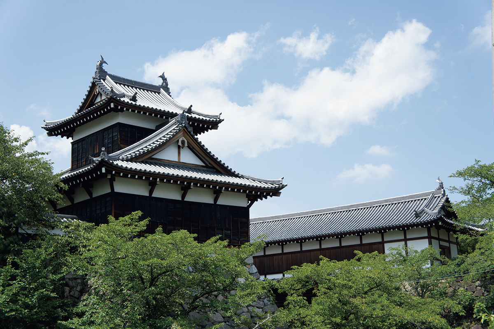

Префектура Нара · Ямато-Корияма · история
Замок Корияма: последняя резиденция Хидэнаги Тоётоми, младшего брата Хидэёси

Хидэёси Тоётоми не раз становился главным героем фильмов и романов, а в 2026 году внимание досталось его младшему брату Хидэнаге: о нём сняли годовой исторический сериал NHK. Свой путь Хидэнага закончил в замке Корияма на севере префектуры Нара.
1580 год
Камни из чужого замка
Ямато-Корияма лежит к югу от города Нара, и замок здесь стоял ещё до братьев Тоётоми. Большим он стал в 1580 году, когда в него въехал Дзюнкэй Цуцуи.
Для стройки из соседнего замка, которым прежде правил Хисахидэ Мацунага, перевезли огромные камни, а со всей Нары, по преданию, собрали плотников. Мацунага (1508–1577) был властителем Ямато до Цуцуи и одним из самых дерзких воинов эпохи.
1585 год
Два брата въезжают в Ямато
В 1585 году Хидэёси Тоётоми отдал младшему брату Хидэнаге три провинции: Ямато, Идзуми и Кии. Считалось, что вместе они дают 1 млн коку риса в год, хотя на деле выходило около 720 тысяч. В том же году Хидэёси получил титул кампаку, высший пост при императоре, и родовое имя Тоётоми. С этого момента он был правителем страны и по сути, и по закону.
Въезд в новые владения запомнился надолго. Монахи, которые вели «Дневник Тамонъин», записали, что Хидэнага привёл с собой 5000 воинов, а рядом с ним ехал сам Хидэёси. Встречающие заполнили обочины дорог. То, что в Ямато, нынешнюю префектуру Нара, братья въехали вместе, говорит о многом: для власти Тоётоми, опиравшейся на Киото и Осаку, эта провинция была очень важным оплотом. Замок Корияма стал центром, откуда управляли землями вокруг столицы.
1591 год
Последний год в замке
После походов на Сикоку и на Кюсю в 1587 году Хидэнага всё чаще болел. В марте 1590 года Хидэёси отправился в поход на Одавару, и брат провожал его уже из своей усадьбы в Киото, где лечился. В январе следующего года Хидэнага умер в замке Корияма. Ему было 52 года.
Сегодня
Город Хидэнаги
При Хидэнаге вокруг замка вырос призамковый город, и его план из тринадцати кварталов, «Хакомото дзюсантё», читается на улицах до сих пор. Руины замка остаются центром Ямато-Кориямы, а вокруг разбросаны места, связанные с Хидэнагой. В храме Сюнгакуин, семейном храме рода, хранят память о нём, а на кладбище Дайнагон-дзука покоится он сам.
Руины замка Корияма
- Адрес
- префектура Нара, Ямато-Корияма, Дзёнай-тё
- Телефон
- +81 743-52-2010
- Часы работы
- октябрь–март 7:00–17:00, апрель–сентябрь 7:00–19:00
- Выходные
- без выходных
- Цены / Вход
- бесплатно
- Сайт
- yk-kankou.jp